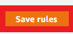

Step 1: Search for "EC2" in the search bar and click the button labeled "EC2"

Step 2: Click the button called "Instances"
Step 3: Click on "Launch instances (running)"
Step 4: Give your instance a name
Step 5: Leave everything the same (unless you know how to use another Operating System)
Step 6: Leave this the same unless you want to have a faster server. If you do change it, they will charge you for it. Please use the calculator on calculator.aws for assistance on pricing. If you don't change it, then it will be free for the first 12 months, then you will have to pay. This is not free, folks!
Step 7.1: Click "Create new key pair"
Step 7.2: Give the key a name, leave everything else alone, and click "Create key pair." Save the key you download in a safe place.
Step 8: Leave everything alone in this area

Step 9: Change the storage amount to 30 Gigabytes (GB)
Step 10: Click the "Launch instance" button
Step 11: Let it process, then click the "View all instances button"
Step 12: From here, you need to scroll down on the left hand side till you see "Security Groups" under "Network and Security"
Step 13: Click on the "launch-wizard-1" security group and click on "Inbound rules"
Step 14: Scroll down and click on "Edit inbound rules"
Step 15: Click on the "Delete" button
Step 16: Click on the "Add rule" button
Step 17: Click on the dropdown and scroll down to select "All traffic"
Step 18: Click on the other dropdown and scroll down to select "Anywhere-IPv4"
Step 19: Click on "Save rules"
Step 20: Repeat Steps 13 through 19 except click "Outbound rules" and "Edit outbound rules"
Step 21: Scroll up on the left sidebar and click on "Instances" under the "Instances" dropdown
You have finished the EC2 setup process on Amazon Web Services! Continue on to the next step to setup a web server and everything you need for a website!
Home AWS Account Setup Server Setup About the Author